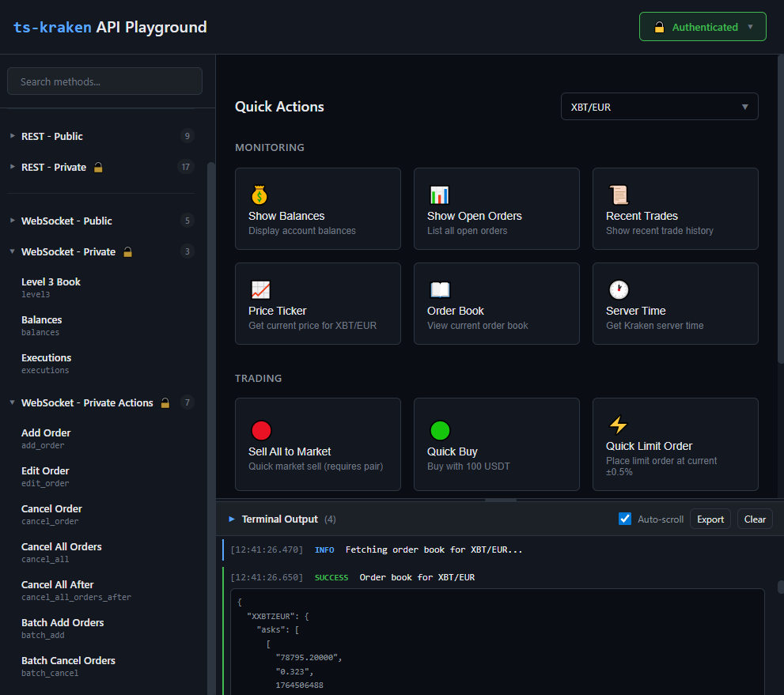
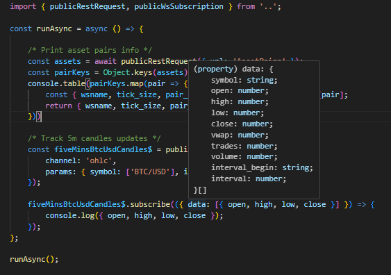

ts-kraken
🦑 Strongly-Typed TypeScript SDK for Kraken Exchange
REST & WebSocket v2 APIs • Node.js & Browser • Full Type Safety
Features • Quick Start • Playground • Browser Support • Documentation
✨ Features
🔧 TypeScript Library
- ✅ Full type safety with IntelliSense autocomplete
- ✅ REST & WebSocket v2 API support
- ✅ RxJS observables for real-time data streams
- ✅ Helper methods for common operations (orders, balances, tickers)
- ✅ Works in Node.js & browsers (no code changes needed)
💻 Interactive REPL CLI
- 🚀 Instant access via
npx ts-kraken - 🎨 Beautiful terminal output with
jqformatting - 🔌 Subscribe to WebSocket streams directly from your shell
- 🔑 Load credentials from
.envor set interactively
🎮 Web Playground
- 🌐 Browser-based API testing interface
- 📊 Execute REST & WebSocket requests visually
- ⚡ Quick actions for common operations
- 💾 Session-only credential storage (secure)
- 🎯 Perfect when Kraken UI is down or slow!

🚀 Quick Start
📦 Install
npm install ts-kraken
Optional: Set up API credentials for private methods (trading, balances, orders):
Option 1: Use environment variables in your npm scripts (Node.js only)
{
"scripts": {
"start": "KRAKEN_API_KEY=xxx KRAKEN_API_SECRET=yyy node app.js"
}
}
Option 2: Use a library like dotenv (Node.js only)
npm install dotenv
# .env
KRAKEN_API_KEY=your-api-key-here
KRAKEN_API_SECRET=your-api-secret-here
import 'dotenv/config';
// Now process.env.KRAKEN_API_KEY is available
Option 3: Pass credentials directly in code (works in browser & Node.js)
// See examples below - credentials passed as second parameter
🎯 Use in Your Code
💡 Note: Examples use top-level
await- requires ES2022+ or async context
import {
publicRestRequest,
privateRestRequest,
publicWsSubscription,
privateWsSubscription
} from 'ts-kraken';
const KRAKEN_API_KEY = 'your-api-key-here';
const KRAKEN_API_SECRET = 'your-api-secret-here';
// 📈 Get BTC/USD ticker (public)
const ticker = await publicRestRequest({
url: 'Ticker',
params: { pair: 'XBTUSD' }
});
// 💰 Get account balance (private)
const balance = await privateRestRequest(
{ url: 'Balance' },
{
apiKey: KRAKEN_API_KEY,
apiSecret: KRAKEN_API_SECRET
} /* Optional runtime override. In NodeJS, process.env values are used if not passed */
);
// 📡 Subscribe to live ticker updates
const ticker$ = publicWsSubscription({
channel: 'ticker',
params: { symbol: ['BTC/USD'] }
});
ticker$.subscribe(({ data }) => {
console.log('Latest price:', data[0].last);
});
// 🔒 Subscribe to private executions feed
const executions$ = await privateWsSubscription(
{
channel: 'executions',
params: { snapshot: true }
},
{
apiKey: KRAKEN_API_KEY,
apiSecret: KRAKEN_API_SECRET
} /* Optional runtime override. In NodeJS, process.env values are used if not passed */
);
executions$.subscribe(({ data }) => {
console.log('Trade executed:', data);
});
💡 Full IDE support with autocomplete for all endpoints, parameters, and response types
🎮 Interactive Playground
Launch the browser-based API playground to test endpoints visually:
npm run watch:web-ui
Perfect for:
- 🔍 Testing API endpoints without writing code
- 📊 Exploring available methods and parameters
- 🚨 Trading when Kraken's official UI is down
- 🎓 Learning the API structure
The playground features:
- Quick Actions - Common operations with one click
- Method Browser - All REST & WebSocket endpoints organized by category
- Live Terminal - See real-time responses
- Smart Forms - Auto-generated parameter inputs with validation
💻 REPL CLI
Launch Instantly
npx ts-kraken
Quick Examples
# 📊 Get current server time
.get Time
# 💱 Get BTC/EUR trading pair info
.get AssetPairs pair=BTC/EUR
# 💰 Check your balances (requires API keys)
.post Balance
# 📈 Subscribe to live BTC/USD ticker
.pubsub ticker symbol[]=BTC/USD
# 🔒 Subscribe to your trade executions
.privsub executions snap_orders=true
# 🛑 Unsubscribe from all streams
.unsuball

REPL Commands Reference
| Command | Description | Example |
|---|---|---|
.get |
Fetch public REST data | .get Ticker pair=BTC/USD |
.post |
Fetch private REST data | .post OpenOrders |
.pubsub |
Subscribe to public WebSocket | .pubsub ticker symbol[]=BTC/USD |
.privsub |
Subscribe to private WebSocket | .privsub balances |
.unsub |
Unsubscribe from specific channel | .unsub ticker |
.unsuball |
Unsubscribe from all channels | .unsuball |
.setkeys |
Set API credentials (session only) | .setkeys |
.showkeys |
Display current credentials | .showkeys |
.help |
Show all commands | .help |
.exit |
Exit the REPL | .exit |
💡 Pro tip: Use jq filters and -table flag for formatted output:
.get AssetPairs . as $base|keys|map($base[.])|map({wsname,tick_size}) -table
Set Up API Keys
Create a .env file in your working directory:
KRAKEN_API_KEY=your-api-key-here
KRAKEN_API_SECRET=your-api-secret-here
🌐 Browser & Node.js Support
ts-kraken v5.0+ works seamlessly in both environments with zero configuration.
How It Works
The library automatically detects your runtime and uses:
- Node.js: Native
cryptomodule - Browser: Web Crypto API (
crypto.subtle)
Browser Requirements
- ✅ Modern browser (Chrome, Firefox, Safari, Edge)
- ✅ ES2020+ support
- ✅ Web Crypto API (built into all modern browsers)
Browser Security Best Practices
When using ts-kraken in the browser:
⚠️ NEVER hardcode API keys in client-side code
✅ Store credentials in session storage only (not localStorage)
✅ Use separate API keys with limited permissions
✅ Consider using a backend proxy for sensitive operations
✅ Be aware that browser code is visible to users
CORS & Proxy Setup
Some Kraken API endpoints may require a proxy due to CORS restrictions. The web playground handles this automatically in development mode.
Bundler Configuration
Most modern bundlers (Vite, Webpack, etc.) handle Node.js module externalization automatically. No configuration needed!
📦 Vite Configuration (if needed)
// vite.config.ts
export default {
resolve: {
alias: {
crypto: 'crypto-browserify' // fallback if needed
}
}
}
📚 Documentation
Official Resources
- 📖 ts-kraken API Documentation - Full SDK reference
- 🔗 Kraken REST API - Official REST docs
- 🔗 Kraken WebSocket v2 - Official WS docs
Additional Tools
- 🛠️ jq Manual - JSON query language
- 🎮 jq Playground - Test jq filters online
🎯 Use Cases
🤖 Trading Bots
Build automated trading strategies with full type safety and real-time data streams.
📊 Market Analysis
Subscribe to multiple WebSocket feeds and analyze market data in real-time with RxJS operators.
⚡ Emergency Trading
Use the REPL or web playground to execute trades when Kraken's UI is experiencing issues.
🧪 API Testing
Quickly test and validate Kraken API endpoints before integrating into production.
📈 Portfolio Management
Monitor balances, open orders, and trade history with strongly-typed responses.
🙏 Acknowledgments
- @trasherdk - Contributor
- Kraken Exchange - API documentation and support
- All contributors and users of this library
📄 License
MIT License - see LICENSE file for details
🔗 Links
Made with 💙 for the Kraken developer community